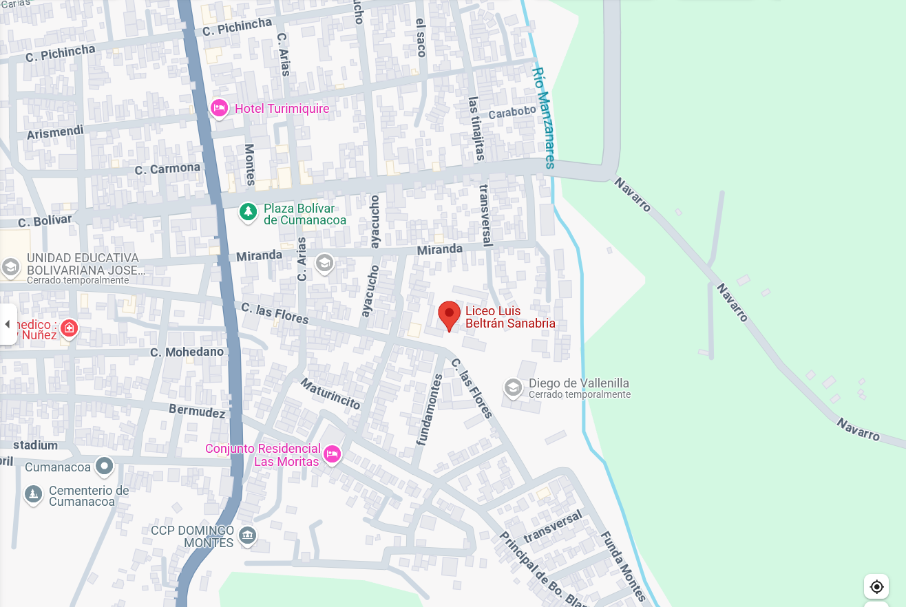
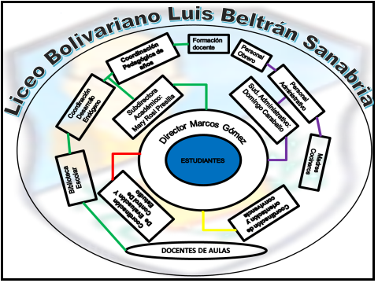

Reseña Histórica
El Liceo Bolivariano "Luís Beltrán Sanabria" inició sus actividades en el año 1959, después del derrocamiento del General Marcos Pérez Jiménez, siendo su primera sede una casa que está situada en la calle Bolívar perteneciente a la familia Ruíz. Su primer director fue el Profesor Carlos José Palomo y el Subdirector el Profesor Eleazar Rojas, contando con una nómina de trece docentes, una secretaria, una bibliotecaria y cuatro obreros.
La matrícula inicial fue de 222 estudiantes, distribuidos en 4 secciones de primer año (127 estudiantes), 65 en segundo año y 30 en una sección de tercer año, todos del Ciclo Básico Común.
Posteriormente, fue trasladado a su nueva sede en el año 1968, ubicada en la calle Las Flores de Cumanacoa, siendo su Director el Profesor Dimas Carpio, funcionando además una subdirección, dos seccionales, una biblioteca, una cocina, cuatro laboratorios, una cancha deportiva "múltiple" y siete aulas de clases impartiéndose educación a nueve secciones del Ciclo Básico Común y cuatro del Ciclo Diversificado "Ciencias y Humanidades". Además para esa fecha se impartían las Cátedras de Mecanografía, Taquigrafía, Caligrafía, entre otras.
En el 2024 se llamaba Liceo Bolivariano "Luís Beltrán Sanabria" y funcionaba en la misma edificación en el nivel de Media General con una matrícula de 825 estudiantes, 83 docentes, un Director, un Subdirector Académico, un Subdirector Administrativo, 5 Coordinadores de año (1 para cada año de 1ero a 5to año), un Coordinador del Departamento de Evaluación y un Coordinador de Control de estudios, un Coordinador CRA, 4 bibliotecarios, 1 Coordinador de Protección y Bienestar Estudiantil, 1 docente SAE, 1 coordinador de Desarrollo Endógeno, 45 Obreros, 36 Administrativos; siendo su director el Lcdo. Luis José Díaz, el Subdirector Académico Lcdo. Juan Carlos Benítez y el Subdirector Administrativo Lcdo. Domingo Caraballo.
El Liceo Bolivariano "Luis Beltrán Sanabria", cuenta con una planta física formada por 16 aulas de clase, 1 Centro de Recursos para los Aprendizajes, 2 Canchas Deportivas, 1 Sala de Informática y Telemática, 2 Laboratorios de Física, 2 Laboratorios de Química, 2 Laboratorios de Biología, 1 Laboratorio de Ciencias de la Tierra, oficinas para las Coordinaciones, Dirección y Subdirecciones, además cuenta con 1 Sala de Profesores y 1 Comedor Escolar. Así mismo cuenta con un amplio Escenario ubicado en el patio central del plantel.
Los horarios están diseñados de acuerdo a la cantidad de aulas existentes, con horas académicas de 45 minutos, entrando a las 7:00 de la mañana el primer turno y saliendo a las 3:00 de la tarde en un horario integral. En este plantel, además funciona el núcleo de la Universidad Nacional Experimental Simón Rodríguez, ocupando varias aulas, satisfaciendo las necesidades académicas, en calidad de préstamo circunstancial.
Todos los colectivos que hacen vida en este liceo, han hecho un esfuerzo mancomunado por adaptarse a las nuevas exigencias del modelo educativo actual, propiciando un ambiente de mayor comunicación e interrelación entre cada uno de los miembros de la institución; así como también, se ha logrado la participación activa de los estudiantes en el proceso educativo. Se ha logrado la integración social, educativa con otras instituciones de la localidad y del estado, participando en congresos, foros, mesas de trabajo entre otros. También se ha comenzado a integrar la comunidad logrando la participación activa en los grupos CRP.
Tras un deslave ocurrido en el Municipio Montes el 2 de julio del 2024, la institución fue declarada como pérdida total. Motivado a esto, el Presidente de la República Bolivariana de Venezuela Nicolás Maduro Moros, ordenó la restitución y dotación total de las instalaciones de la institución. El 15 de septiembre totalmente nuevo arrancó el año escolar vigente, con una matrícula de 737 estudiantes, para graduar bachilleres en Ciencia y Tecnología, acogiéndose a los lineamientos establecidos por el ministerio.
En diciembre del 2024, el Liceo Bolivariano "Luis Beltrán Sanabria" pasó a llamarse Complejo Educativo "Luis Beltrán Sanabria" y en la actualidad atiende a 728 estudiantes.
Nuestra Misión
Formar ciudadanos integrales, críticos y comprometidos con el desarrollo social, científico y tecnológico de su comunidad y del país, proporcionando una educación de calidad que fomente el desarrollo de habilidades, valores y competencias necesarias para enfrentar los desafíos del siglo XXI.
Nuestra Visión
Ser un Liceo reconocido por su excelencia académica, compromiso social y liderazgo en la integración de tecnologías para la mejora continua, convirtiéndonos en un referente educativo en la región capaz de proyectar nuestra labor a nivel local, nacional e internacional.
Ubicación Geográfica del Liceo "Luís Beltrán Sanabria"

El Liceo "Luís Beltrán Sanabria" se encuentra ubicado en la Calle "Las Flores", al lado del Complejo Educativo "Diego de Vallenilla", Parroquia "Cumanacoa", Municipio "Montes", Estado "Sucre", Venezuela.
Estructura Organizativa del Liceo "Luís Beltrán Sanabria"

La estructura organizativa del Liceo "Luís Beltrán Sanabria" está conformada por un equipo directivo compuesto por la Dirección, Subdirecciones Académica y Administrativa, coordinaciones de año, departamentos de evaluación, control de estudios, bienestar estudiantil, y un equipo de docentes altamente capacitados, personal administrativo y obrero que garantizan el funcionamiento óptimo de la institución.
Personal de la Institución
Actualmente, el Liceo cuenta con:
- 83 docentes altamente calificados y especializados
- 1 Director: Lcdo. Luis José Díaz
- 1 Subdirector Académico: Lcdo. Juan Carlos Benítez
- 1 Subdirector Administrativo: Lcdo. Domingo Caraballo
- 5 Coordinadores de año (uno por cada año escolar)
- 1 Coordinador del Departamento de Evaluación
- 1 Coordinador de Control de Estudios
- 1 Coordinador CRA (Centro de Recursos para el Aprendizaje)
- 4 bibliotecarios
- 1 Coordinador de Protección y Bienestar Estudiantil
- 1 docente SAE (Servicio de Apoyo Educativo)
- 1 coordinador de Desarrollo Endógeno
- 45 Obreros
- 36 Administrativos
Población Estudiantil
El Liceo atiende actualmente a 728 estudiantes en el nivel de Media General, formando bachilleres con mención en Ciencias y Tecnología, preparados para enfrentar los retos del futuro y contribuir al desarrollo de su comunidad y del país.